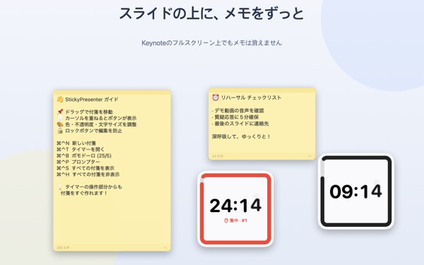
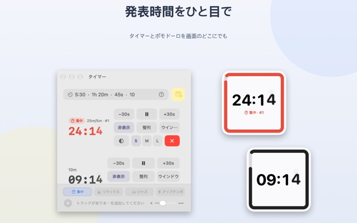
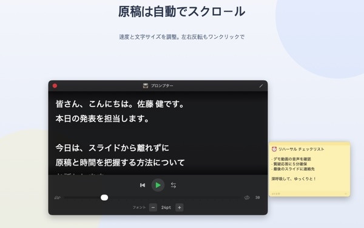
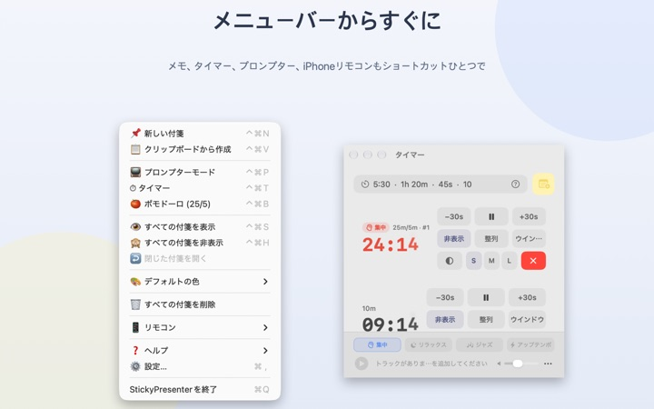

台本と残り時間を
スライドの上に
Keynoteをフルスクリーンにしても、付箋とタイマーはその上に表示されたまま。発表アプリからフォーカスを奪わないので、スライド送りもいつもどおりです。
すべての機能が無料。macOS 14以降に対応。

スライドの上に出してみる
アプリと同じ書き方で時間を入力してみてください。15sを押すと、終わり際にウィジェットがどう知らせるかすぐに確かめられます。
発表中、台本と時計はどこに置いていますか？
発表者ノートには画面がもう1枚必要で、腕時計を見れば聴衆に気づかれます。ノートパソコンに貼った紙のメモが落ちた経験もあるかもしれません。StickyPresenterは、台本と残り時間をスライドのすぐ上、視線の先に貼っておけます。
ちらっと見れば残り時間がわかる
画面の隅の正方形ウィジェットが残り時間を表示します。終わりが近づくと赤くなり、時間になると通知音と点滅する枠で知らせます。
時間は5:30や1h 20mのように気軽に入力でき、25/5と書けば集中と休憩を繰り返すポモドーロになります。タイマーを別ウインドウで開けば、画面共有やAirPlayでそのウインドウだけを映せます。

カメラを見ながら台本を読める
プロンプターが設定した速さで台本を送り、最後まで来ると自動で止まります。台本をコピーして⌘⌃Pを押せば、その文章ですぐに開きます。
ハーフミラーを使うプロンプター機材向けの左右反転もあり、速さと文字サイズは次回もそのままです。

スライドから手を離さない
メニューバーで静かに動くので、Dockアイコンも管理するウインドウもありません。新しい付箋は⌘⌃N、タイマーは⌘⌃Tなど、ショートカットはフルスクリーンの発表中でもすぐ効きます。
ステージでは無料のiPhoneアプリRemote Controller for Stickyで、タイマーの開始や一時停止、スライドに重なったウィジェットの移動ができます。

はじめ方は3ステップ
- 1
アプリを開く
メニューバーに付箋のアイコンが現れ、初回だけ使い方ガイドが開きます。
- 2
付箋とタイマーを出す
台本をコピーして
⌘⌃Vを押し、タイマー欄に発表時間を入力します。 - 3
スライドをフルスクリーンに
付箋とタイマーはその上に残ったままです。
ショートカットと時間の書き方
- ⌘⌃N
- 新しい付箋
- ⌘⌃V
- コピーした文章で新しい付箋
- ⌘⌃T
- タイマーの表示・非表示
- ⌘⌃B
- ポモドーロを開始（集中25分、休憩5分）
- ⌘⌃P
- プロンプター
- ⌘⌃S · ⌘⌃H
- すべての付箋を表示・非表示
- 10
- 数字だけなら分（10分）
- 5:30 · 1:15:00
- 分:秒、時:分:秒
- 1h 20m · 45s
- 単位つき
- 25/5
- 止めるまで集中/休憩を繰り返す
ショートカットはすべてCommand（⌘）とControl（⌃）を一緒に押し、ほかのアプリを使っている間も動きます。タイマーは最大99:59:59まで設定できます。
よくある質問
本当に無料ですか？
はい。すべての機能が無料で、iPhoneアプリRemote Controller for Stickyも別の無料アプリです。気に入っていただけたら設定から開発者にチップを送れますが、チップで使えるようになる機能はありません。
画面共有やミラーリングでタイマーだけを映せますか？
はい。タイマーの行のウインドウボタンで通常のウインドウとして開くと、画面共有やAirPlayのウインドウ一覧に表示され、そのウインドウだけを選んで映せます。
非表示にしたウィジェットが見つかりません。
タイマーウインドウでそのタイマーの行にポインタを置くと、ウィジェットの位置が点線で示されます。整列ボタンを押すとタイマーウインドウの横に戻ってきます。
うっかり付箋を閉じてしまいました。
メニューバーの「閉じた付箋を開く」から、直近20枚まで復元できます。付箋は入力したそばから保存され、アプリを開き直しても同じ場所に戻ります。
ショートカットが効きません。
ガイドのショートカット一覧で「ほかのアプリが使用中」と表示されるものは、別のアプリが先に使っています。そのアプリを終了すれば再び使えます。アクセシビリティの許可は必要ありません。
カメレオンテーマで画面収録の許可を求められます。
カメレオンはウィジェットの背後の画面の色を読み取って色を合わせるテーマなので、この許可が必要です。画面を保存したり送信したりはしません。許可しなくても、システム・ライト・ダークのテーマはそのまま使えます。
BGMはどうやって入れますか？
タイマーウインドウ下部の音楽バーで雰囲気（集中、リラックス、ジャズ、アップテンポ）を選ぶと、アプリが雰囲気ごとのフォルダを作ります。そこに曲を入れると、タイマーと一緒に順番に再生されます。曲はアプリに含まれていません。
iPhoneのリモコンがMacを見つけられません。
次の順に確認してください。MacでStickyPresenterが起動しているか（メニューバーのアイコン）、両方の端末が同じWi‑Fiにつながっているか（ゲストネットワークやモバイル通信は不可）、iPhoneとMacの両方で「プライバシーとセキュリティ」の「ローカルネットワーク」を許可しているか、VPNがオフになっているか。
ペアリングコードが違うと表示されます。
Macのメニューバーの「リモコン」に今表示されている4桁のコードを入力してください。「新しいペアリングコード」を押した場合は新しいコードだけが有効です。一度つながれば、次からはアプリを開くだけで接続されます。
ほかの人に自分のタイマーを操作されませんか？
コードを教えない限り操作できません。Macは正しいコードを入力したリモコンだけを受け入れ、同じネットワーク内の暗号化された直接接続でやり取りします。コードを見せてしまった場合は、メニューバーの「リモコン」で「新しいペアリングコード」か「ペアリング済みのリモコンを解除」を選んでください。
付箋や台本はどこに保存されますか？
このMacの中だけです。アカウントも広告もなく、匿名の利用統計とご自身で送ったフィードバック以外はインターネットに出ていきません。
ご質問、不具合、機能のご要望はmizzking75@gmail.comまでお送りください。